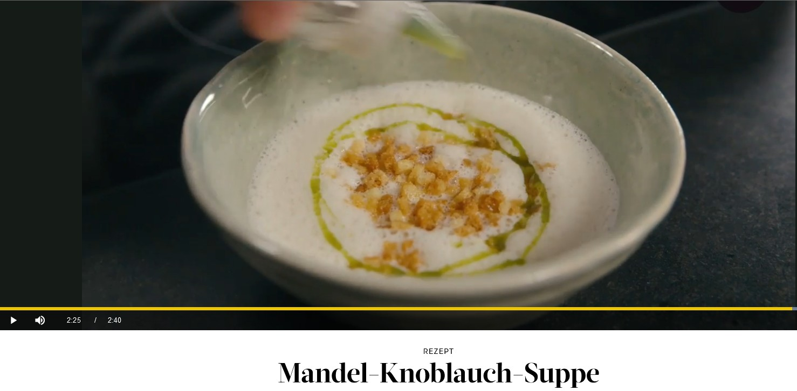
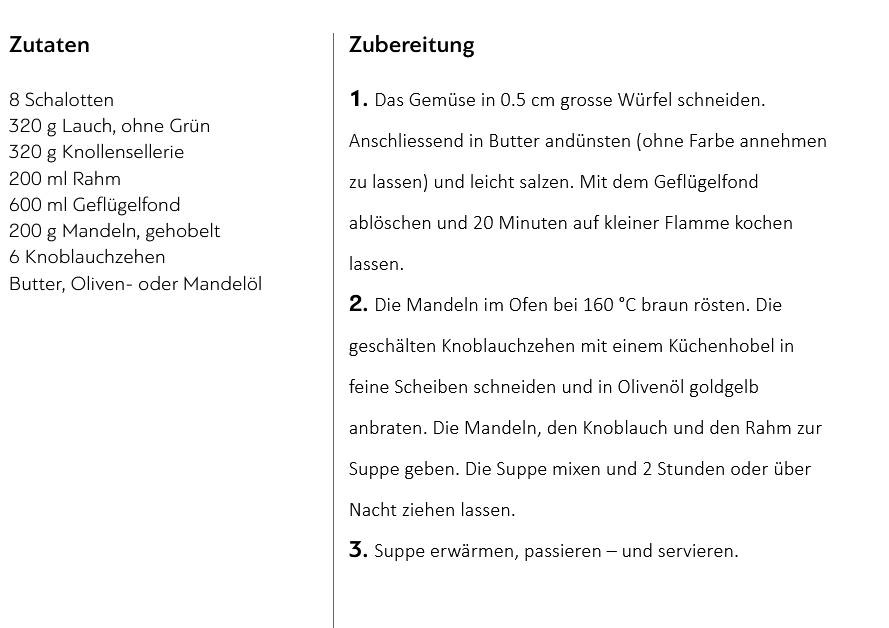

Mandel-Knoblauch-Suppe


Hauptgericht
Deutsche Küche
Gut aber schade um Restmaterial. Machen wir nicht mehr!
- Die Knoblauchzehen schälen und fein hacken.
- In einem Topf das Olivenöl erhitzen und die gehackten Knoblauchzehen darin anschwitzen.
- Die Mandeln hinzufügen und kurz mitbraten.
- Die Gemüsebrühe hinzugießen und alles zum Kochen bringen.
- Die Suppe etwa 30 Minuten köcheln lassen, bis die Mandeln weich sind.
- Die Suppe pürieren, bis eine cremige Konsistenz entsteht.
- Mit Salz und Pfeffer abschmecken.
- Mit Brotbrösmeli und Kräuteröl/Olivenöl garnieren.